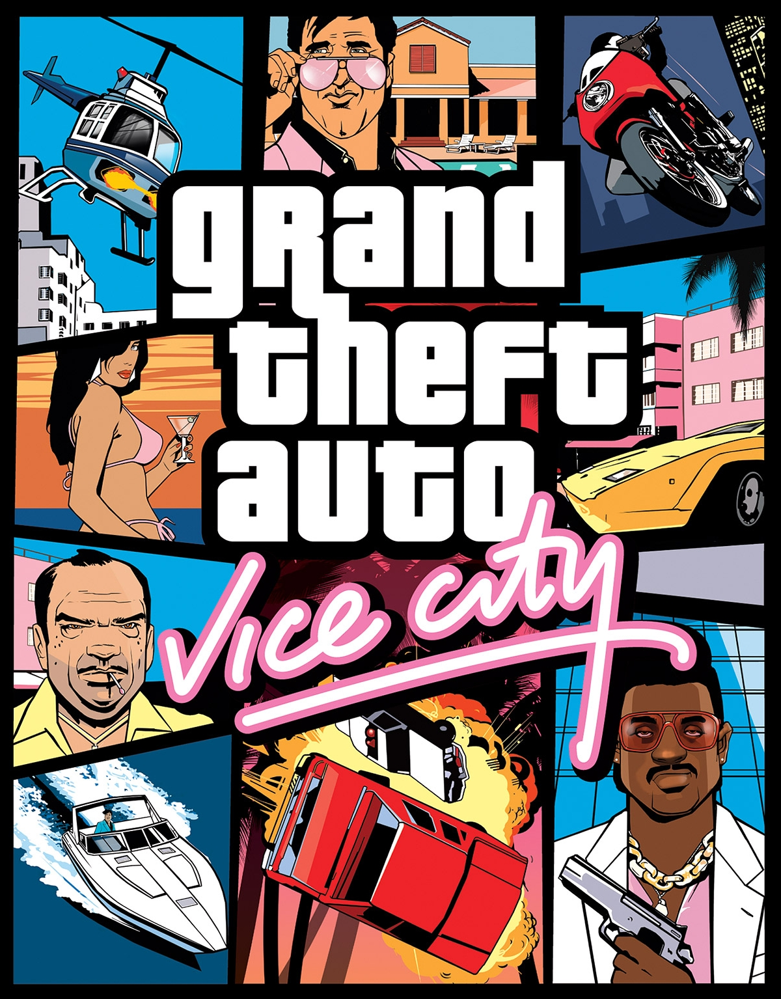
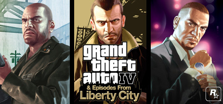

Grand Theft Auto (сокр. GTA) — серия мультиплатформенных компьютерных игр в жанре action-adventure, созданных и разрабатываемых главным образом британской компанией-разработчиком Rockstar North (бывшая DMA Design) и выпускаемых компанией Rockstar Games. В разработке ряда игр серии ключевые роли сыграли братья Дэн и Сэм Хаузеры, а также геймдизайнер Лесли Бензис. Игры серии, начиная с Grand Theft Auto III, принадлежат к числу самых высоко оценённых критиками и самых продаваемых игр в истории; серия является одной из самых коммерчески успешных медиафраншиз в индустрии компьютерных игр. На 2022 год в серии насчитывается одиннадцать игр на различных платформах. Действие большинства игр серии Grand Theft Auto происходит на территории США, в вымышленных городах Либерти-Сити и Вайс-Сити, прообразами которых послужили соответственно Нью-Йорк и Майами, и вымышленном штате Сан-Андреас, прообразом которого стали Калифорния и Невада. Игры серии предлагают игроку обширные открытые миры, где игрок может как продвигаться по сюжету, выполняя цепочки связанных друг с другом миссий, так и самостоятельно находить интересные места и задания; игра Grand Theft Auto III стала важной вехой в становлении этой концепции в истории компьютерных игр. Геймплей игр включает в себя симуляцию управления автомобилем и элементы шутера, а также ролевых игр и стелса. Герои игр серии зачастую являются преступниками, стоящими вне закона и пытающимися подняться выше в криминальной иерархии, и возможные задания для них включают в себя угон автомобилей, ограбления магазинов и банков и убийства членов конкурирующих банд. Реалистичное изображение в играх насилия и рассчитанных на взрослую аудиторию сцен неоднократно становилось причиной скандалов и судебных разбирательств.
Вернуться к меню
1997 г. Grand Theft Auto
Grand Theft Auto состоит из шести уровней — на каждом уровне игроку необходимо набрать определённое
количество денег, выполняя разные задания местных криминальных авторитетов, угоняя транспорт и устраивая
хаос во всём городе, на что даётся пять жизней-попыток.
Деньги игрок может потратить например, на перекраску своих автомобилей. Однако, растрачивая деньги, игрок
пропорционально их теряет, отдаляя, таким образом, переход на следующий уровень.
Набрав необходимую сумму, игрок должен посетить определённое место на карте, после чего он переходит на
следующий уровень.
Главная отличительная черта игры в том, что игрок свободен в выборе: он может свободно путешествовать и
делать всё, что захочет. Игрок при желании может посетить любое место в городе, крушить машины и убивать
людей на улицах, красть и продавать дорогие машины. Для прохождения уровня при этом не требуется выполнить
определённый набор миссий, что, в своём роде, отличает классические игры Grand Theft Auto от более поздних
частей серии.
В заданиях игры также присутствует свобода действий, так как обычно игрок сам выбирает дорогу к
фиксированному пункту назначения. Такой уровень свободы нетипичен для большинства экшн-игр; свобода
действия, перемещения и разнообразие возможностей стали визитной карточкой серии Grand Theft Auto и сделали
её одной из самых известных и продаваемых серий в истории игровой индустрии.
Существуют различные способы заработать нужную для прохождения сумму. Например, совершая различные
преступления: таран автомобилей (10$) или убивая полицейских (1000$). Чем серьёзнее преступление, тем больше
зарабатывается денег. Любые преступления привлекают внимание полиции, однако чем больше награда за
преступление, тем сильнее оно привлечёт внимание полиции. Другой способ заработать — угон машин и их продажа
в доках. Это обычно приносит от одной тысячи до двенадцати, в зависимости от стоимости автомобиля.
Однако, самый лёгкий способ заработка в игре - это прохождение миссий. Успешное выполнение задания приносит
в среднем 50 000$, поэтому, не смотря на необязательность представленных на уровне миссий, игроку
целесообразно начать заниматься ими, что ненавязчиво втягивает игрока непосредственно в сам игровой процесс.
Также, при выполнении миссии множитель увеличивается на единицу. При получении каких-либо денег они всегда
умножаются на текущий множитель. Например, если множитель равен трём, то за убийство полицейского
начисляется 3000$ вместо обычных 1000$. Это относится ко всем начисляемым средствам, включая выплаты за
прохождение миссий.
В игре не предусмотрена возможность сохранения, однако игрок волен продолжить игру начиная с любого из
разблокированных уровней.

Вернуться к меню
1999 г. Grand Theft Auto 2
Grand Theft Auto 2 использует вид сверху и также возвращает идею кражи машин и работы на различные банды.
Игрок играет за героя по имени Клод Спид (англ. Claude Speed). В отличие от Grand Theft Auto в PC-версии
Grand Theft Auto 2 имеется возможность включения ночного режима и дневного (выбирается в Grand Theft Auto 2
Manager перед входом в меню игры на закладке видео). Практически в каждом районе существуют по крайней мере
одна банда, каждая из которых отличается своими собственными особенностями, автомобилями, и поведением.
Примкнув к одной из банд, игрок может снизить авторитет и тем самым испортить отношения с другой и наоборот.
Задания игроку даются по телефонам, расположенным на территориях банд. Существуют телефоны трёх цветов:
зелёного — лёгкие задания, жёлтого — задания средней сложности и красного — трудные задания, существуют
также телефоны голубого цвета, по которым игрок может узнать краткую информацию о бандах. Доступность
заданий от каждой конкретной банды напрямую зависит от авторитета и отношений игрока с ней: чем выше
авторитет и лучше отношения игрока с бандой, тем более сложные задания от неё доступны для него, и наоборот.
На каждом уровне имеется 22 задания: по 7 от каждой из 3 банд, и финальное «последнее задание», когда за
игроком начинают охоту главари банд того района, где он находится. «Последнее задание» считается
выполненным, когда все 3 главаря оказываются уничтоженными.
Цель состоит в том, чтобы достигнуть определённой суммы денег на игровом счету, которая даст возможность для перехода в каждый следующий уровень: $1 000 000 — в первом районе; $3 000 000 — во втором; $5 000 000 — в третьем. В оригинальном Grand Theft Auto игрока преследовала только полиция, но в Grand Theft Auto 2 также добавлены SWAT, федеральные агенты и армейские силы, если рейтинг опасности игрока достаточно высок.
Версия на PlayStation В отличие от Grand Theft Auto, в Grand Theft Auto 2 появилась возможность сохранить игру. Если игрок входит в церковь, которая располагается в каждом районе города, с достаточным количеством денег (одно сохранение в любом районе стоит $50 000), голос возвещает «Аллилуйя! Ещё одна душа спасена!» (англ. Hallelujah! Another soul saved!). Такой каламбур (для англоговорящего игрока) уведомлял, что игра сохранена. Если же игроку не хватало денег, тот же голос восклицал «Проклятье! Нет подношения — нет спасения!» (англ. Damnation! No donation, no salvation!) (в последующих играх серии места сохранения стали бесплатными). Эти голосовые сообщения отсутствуют в версии для PlayStation. Множество изменений произошло в жизни города. Гражданские автомобили и пешеходы играют существенную роль в геймплее. На улицах бродят такие же угонщики, как и сам игрок, которые могут украсть у него машину, пешеходы садятся и ездят на такси. Кроме того полиция, пешеходы и члены банд вступают в перестрелки и драки без участия игрока. В игру включены второстепенные миссии, например игрок может зарабатывать деньги водителем такси или водителем автобуса. PS1-версия Grand Theft Auto 2 более простая, чем PC-версия. Например, уменьшено количество участников банд и пешеходов на улицах, а также уменьшено количество необходимых смертей для завершения миссии «Бешенства».
Вернуться к меню
2001 г. Grand Theft Auto III
Grand Theft Auto III — игра в жанре аction-adventure, сочетающая в себе элементы шутера от третьего лица и
элементы автосимулятора в большом и открытом для исследования игровом мире, с классическим для этого жанра
управлением.
Игра развивает основные идеи геймплея прошлой игры серии — Grand Theft Auto 2: игроку предстоит выполнять
преимущественно криминальные и противозаконные задания, выдаваемые различными персонажами игры, пробираясь
по
криминальной лестнице, чтобы дойти до своей цели отомстить главному антагонисту.
Большинство миссий игрок получает от криминальных боссов и прочих персонажей игры, а также при помощи
нескольких телефонных автоматов, расположенных на территории города. Но также можно получить дополнительные
поручения, если игрок доберётся до определённого места в игровом мире или сядет в определённый автомобиль.
После того, как игрок получает задание, он не может браться за выполнение других миссий, пока не завершит
(или
провалит) текущую. Игровые задания открывают новые возможности для игрока, в зависимости от выполненных
заданий
он сможет открывать проход в другие части Либерти-Сити или покупать новое оружие в магазине.
Вне транспортного средства главный герой, управляемый игроком, может ходить, бегать, прыгать, а также использовать оружие и драться врукопашную, но не умеет плавать. Игроки могут управлять различными транспортными средствами, в том числе водными и самолётом. Открытое окружение позволяет игрокам свободно передвигаться и выбирать, чем они будут заниматься в игровом мире. Однако для того, чтобы пройти игру и открыть новые районы города, необходимо выполнять сюжетные миссии, в остальном же они не обязательны и могут быть завершены игроком в любое время. Вне миссий игрок свободен в действиях и передвижении, и может совершать многие противозаконные в реальном мире действия: убивать прохожих и полицейских, угонять и взрывать автомобили и т. д. Совершение уголовных преступлений привлекает внимание органов правопорядка и повышает уровень розыска игрока полицией.
GTA III стала первой трёхмерной игрой в серии, что позволило взглянуть игрокам на открытый мир с другого ракурса В интерфейсе игры он отражён в виде «звёздочек» в правом углу игрового экрана. При соответствующем уровне розыска подсвечивается соответствующее число «звёздочек». При первом уровне розыска на поимку протагониста отправляются пешие патрули, при втором уровне — патрульные машины, а с повышением уровня розыска для поимки игрока на помощь полиции будут направлены: при 3 уровне розыска полицейский вертолёт, при 4 — силы спецназа (SWAT), при 5 — агенты ФБР, при 6 — армия США с танками. Избавиться от розыска можно, перекрасив машину в покрасочном салоне или взяв полицейскую взятку в виде звезды — она снижает уровень розыска на один пункт. Однако, если игрок имеет одну звезду розыска, не попадаясь на глаза полиции, она исчезнет с течением времени. При двух и более звёздах розыска такой способ ухода не сработает
Если персонажа арестуют или он погибнет от полученных травм, персонаж игрока появляется вновь у полицейского участка или госпиталя соответственно, лишённый арсенала оружия и бронежилета, а также части денежных средств, ушедших на дачу взяток или лечение. Фактически, персонаж игрока в Grand Theft Auto III неограничен в количестве жизней, в отличие от Grand Theft Auto и Grand Theft Auto 2. Это позволяет персонажу «умереть» столько раз, сколько заблагорассудится игроку, делая невозможным закончить игру раньше времени.
Одной из главных особенностей предыдущих игр серии, перекочевавшая без изменений в Grand Theft Auto III, была возможность зарабатывать деньги, совершая различные преступления — воруя или уничтожая транспортные средства, убивая мирных жителей. Количество наличных денег более не является главным требованием к открытию новых районов. Отныне это зависит от прохождения сюжетных заданий. Кроме того, игрок волен в любое время вернуться во все разблокированные районы города. Однако с открытием новых областей пребывание в предыдущих становится опаснее, в связи с нападением на персонажа игрока вражеских группировок. Интерфейс игры был пересмотрен. На мини-карте отображается местоположение игрока, ключевые точки (места сохранений и получения заданий) и цели заданий. Уровни здоровья и брони указаны в числовом формате; добавлены часы, показывающие внутриигровое время. Было решено отказаться от показателей уважения, как в Grand Theft Auto 2. Отныне отношение членов группировок к персонажу игрока зависит от продвижения по сюжету. В игре сохранились внутриигровые бонусы, такие как аптечка, бронежилет, взятка полиции (понижающая уровень розыска полицией на один уровень), адреналиновая пилюля (замедляющая внутриигровое время и увеличивающая силу удара). Grand Theft Auto III стала первой игрой в серии, в которой отсутствовал мультиплеер. Однако с помощью одной из любительской модификации, известной как Multi Theft Auto, удалось вернуть многопользовательский режим.
Вернуться к меню
2002 г. Grand Theft Auto: Vice City
Grand Theft Auto: Vice City — игра в жанре action-adventure, сочетающая в себе элементы шутера от третьего
лица
и элементы автосимулятора в большом и открытом для исследования игровом мире, с классическим для этого жанра
управлением. Игра развивает основные идеи геймплея предыдущих игр серии — Grand Theft Auto 2 и Grand Theft
Auto
III: игроку предстоит выполнять преимущественно криминальные и противозаконные задания, выдаваемые
различными
персонажами игры. Большинство миссий игрок получает от криминальных боссов и прочих персонажей игры, а также
при помощи нескольких телефонных автоматов, расположенных на территории города. Также игрок может получить
дополнительные задания, если доберётся до определённого места в игровом мире или сядет в определённый
автомобиль. После того, как игрок получает задание, он не может браться за выполнение других миссий, пока не
завершит или провалит текущую.
Вне транспортного средства главный герой, управляемый игроком, может ходить, бегать, прыгать, а также
использовать оружие и драться врукопашную, но не умеет плавать (умирает в глубокой воде). Игроки могут
управлять различными транспортными средствами, в том числе водными и воздушными.
Открытое окружение позволяет игрокам свободно передвигаться и выбирать, чем они будут заниматься в игровом
мире. Однако для того, чтобы пройти игру и открыть новые районы города, необходимо выполнять сюжетные
миссии, в
остальном же они не обязательны и могут быть завершены игроком в любое время. Вне миссий игрок свободен в
действиях и передвижении, и может совершать многие противозаконные в реальном мире действия: убивать
прохожих и
полицейских, угонять и взрывать автомобили и т. д. Совершение уголовных преступлений привлекает внимание
органов правопорядка и повышает уровень розыска игрока полицией. В интерфейсе игры он отражён в виде
«звёздочек» в правом углу игрового экрана — каждому уровню соответствует определённое число «звёздочек». При
минимальном уровне розыска на поимку протагониста отправляются минимальные силы полиции, а с повышением
уровня
розыска для поимки игрока на помощь полиции будут направлены: при втором уровне розыска — полицейские
машины,
при 3 — полицейский вертолёт и 2 детектива на переделанном гражданском автомобиле Cheetah с мигалкой, при 4
—
силы спецназа (SWAT), при 5 — агенты ФБР, при 6 — армия США при поддержке танков. Избавиться от розыска
возможно, перекрасив машину в покрасочном салоне, переодев одежду протагониста (с помощью значка футболки в
некоторых магазинах одежды и местах сохранения, если уровень розыска не больше 2 пунктов) или взяв
полицейскую
взятку в виде звезды (она снижает уровень розыска на 1 пункт).
Если персонажа арестуют или он погибнет от полученных травм, то он появляется вновь у полицейского участка или больницы соответственно, лишённый арсенала оружия и бронежилета, а также части денежных средств, ушедших на дачу взяток или лечение. Фактически, персонаж игрока неограничен в количестве жизней. Это позволяет персонажу «умереть» столько раз, сколько заблагорассудится игроку, делая невозможным закончить игру раньше времени. Арест полицейскими или смерть протагониста во время прохождения игровых заданий означает провал миссии и необходимость прохождения задания заново. В игре сохранились внутриигровые бонусы, такие как аптечка, бронежилет, взятка полиции (понижающая уровень розыска полицией на 1 пункт), адреналиновая пилюля (замедляющая внутриигровое время и увеличивающая силу удара) и символ черепа, позволяющий устроить геноцид (при этом выдаётся определённое оружие).
Вернуться к меню
2004 г. Grand Theft Auto: San Andreas
Структура геймплея GTA: San Andreas аналогична двум предыдущим играм серии. Основное действие состоит из
элементов экшена от третьего лица и автомобильного симулятора в большом и открытом для исследования игровом
мире. Вне транспортного средства главный герой, управляемый игроком, может ходить, бегать, прыгать, лазать и
плавать (последние 2 возможности являются новыми в серии), а также использовать оружие и драться
врукопашную.
Игроки могут угнать и использовать множество разнообразных средств передвижения, включая автомобили,
мотоциклы,
мопеды, квадроциклы, велосипеды, катера, самолёты, вертолёты, суда на воздушной подушке, поезда, танки и
даже
реактивный ранец.
Открытый мир позволяет игрокам свободно путешествовать и выбирать, чем они будут заниматься в Сан-Андреасе.
Для
того, чтобы пройти игру и открыть доступ в новые города, необходимо выполнять сюжетные миссии, в остальном
же
они необязательны и могут быть завершены в любое время. Вне миссий игрок свободен в действиях, и может
совершать многие противозаконные в реальном мире поступки: убивать прохожих и полицейских, грабить их,
взрывать
автомобили и т. д. Однако такие действия привлекают внимание властей, и за главным героем начинают охотиться
стражи правопорядка. Чем больше преступлений совершает игрок, тем большие силы привлекаются для его
задержания:
небольшие проступки пытается уладить местная полиция, в то время как на более высоких уровнях розыска
преступника встречают команды специального назначения и даже военные подразделения с поддержкой тяжёлой
бронированной техники и воздушным сопровождением в виде полицейских вертолётов.
Также игрок может исследовать возможности игры, находя секреты от разработчиков, играть в мини-игры и
выполнять
второстепенные миссии.
Традиционные для серии несюжетные задания были включены и в GTA: San Andreas — игрок может поработать таксистом, развозя пассажиров, стать пожарным и тушить горящие автомобили, доставлять пострадавших людей в больницу, а также сражаться с преступностью в роли борца за справедливость. За успешное выполнение заданий главный герой получает вознаграждение. Появились и новые миссии (среди которых профессии дальнобойщика, машиниста поезда и курьера, требующие от игрока доставки груза за ограниченное время), а также школы обучения вождению автомобиля и мотоцикла, пилотированию и управлению катерами, которые помогают игрокам обрести необходимые для использования соответствующего транспорта навыки. В отличие от Vice City и GTA III, в которых при пересечении границ районов города появлялся загрузочный экран, Сан-Андреас представляет собой «бесшовный» мир, в котором игрок может путешествовать без пауз. Экран загрузки появляется в игре только перед внутриигровыми скриптовыми сценами и перед входом в здания. Этот факт был достаточно неожиданным для игроков, учитывая, что площадь штата Сан-Андреас в четыре раза больше размеров Вайс-Сити и в пять раз больше Либерти-Сити (GTA III, Liberty City Stories). Другое заметное отличие между GTA: San Andreas и его предшественниками состоит в том, что в игре отсутствуют т. н. «спрятанные пакеты» (которые были заменены на граффити, скрытые фотографии, подковы и раковины), а также миссии «Ярости» (англ. «Rampages»).

Вернуться к меню
Игры серии Grand Theft Auto отличаются свободой действия, включающей свободное передвижение по обширным территориям, возможность угнать любой встретившийся транспорт и убить любого увиденного неигрового персонажа. При создании GTA IV разработчики переработали многие существующие аспекты и включили несколько нововведений.
Как и в предыдущих играх серии, герою предстоит выполнять преимущественно криминальные задания, выдаваемые различными игровыми персонажами. Успешное выполнение данных миссий открывает возможность прохождения дальнейших миссий, новые районы города, новые виды оружия и т. д. Помимо основных 88 сюжетных миссий в игре по традиции присутствуют дополнительные второстепенные задания, количество которых значительно уменьшилось по сравнению с предыдущими играми серии, однако, их выполнение осталось необходимым для 100 % прохождения игры: миссии полицейского, уникальные прыжки, миссии угона автомобилей, автомобильные гонки, миссии наёмного убийцы, поиск спрятанных предметов (в данном случае — голубей) и ряд других.
Вернуться к меню
Всего в игре 62 основные миссии и множество побочных. Так как миссии с ограблением можно проходить несколькими способами и в игре имеется 3 концовки, то количество основных миссий увеличивается до 69. Персонажи Впервые в истории серии в игре присутствуют сразу три главных героя — Франклин, Майкл и Тревор, между которыми можно переключаться почти в любое время[14][15]. В некоторых миссиях доступно два персонажа, в некоторых миссиях игрок поочередно получает под управление сначала одного, а потом другого персонажа. Выбор персонажа осуществляется с помощью специального кругового селектора с четырьмя секторами, причём нижний четвёртый сектор отведён для персонажа, созданного игроком в Grand Theft Auto Online. Впервые в серии главные персонажи имеют специальные навыки — каждый навык даёт соответствующему персонажу то или иное преимущество.
• У Франклина — замедление времени во время езды в транспорте, что даёт преимущество в манёвренности. Чтобы восполнить шкалу умений Франклина, надо набрать на транспорте максимальную скорость, избегать аварий или ездить по встречной полосе. • У Майкла — замедление времени во время стрельбы, что облегчает прицеливание. Для заполнения шкалы навыков Майкла требуется ездить на высокой скорости, устранить противника в ближнем бою или убить выстрелом в голову. • У Тревора — припадки бешенства, благодаря которым он наносит врагам вдвое больше урона, а сам получает вдвое меньше. Шкала навыков Тревора заполняется, когда он убивает противников, делает выстрелы в голову, ездит на высокой скорости и получает урон. Майкл, Франклин и Тревор начинают игру с разным набором личных характеристик. По мере того как герои набираются опыта, растут и их показатели, а это, в свою очередь, улучшает их навыки, повышает скорость реакции и выносливость. Чем чаще игрок применяет навык, тем быстрее растёт соответствующая характеристика. Например, если Майкл полетает на вертолёте, у него повысится показатель полёта. Личные характеристики индивидуальны для каждого из героев, то есть, если Франклин будет много кататься на автотранспорте, показатель вождение повысится только у него, у Майкла и Тревора эта характеристика останется неизменной. • Спецспособность. При её использовании будет постепенно повышаться соответствующий показатель, а вместе с ним возрастёт и скорость заполнения шкалы спецспособности. • Выносливость. Повышенная выносливость позволяет герою дольше бегать, плавать и кататься на велосипеде, прежде чем он устанет, но если продолжать изнурять себя, герой начнёт терять здоровье. При выполнении этих действий данный показатель растёт. • Стрельба. Высокий показатель стрельбы уменьшает отдачу всех видов оружия и делает героя более метким, кроме того, герой сможет носить больше боеприпасов и быстрее перезаряжаться. Чем больше целей поразит игрок, особенно выстрелом в голову, тем сильнее вырастет его показатель. Чтобы быстрее его повысить, игроку надо будет посещать тир и проходить испытания на меткость. • Сила. Повышенная сила позволяет наносить больше урона в рукопашном бою, быстрее карабкаться по лестницам, получать меньше урона при падении, аварии, взрыве или возгорании, а также позволяет герою сильнее бить по мячу во время игры в гольф или теннис. Чтобы повысить этот показатель, игрок должен участвовать в драках и заниматься спортом. • Скрытность. Чем выше показатель скрытности, тем меньше шума издаёт герой при перемещении в обычном и скрытном режиме, кроме того, это позволяет быстрее передвигаться в скрытном режиме. Данный показатель растёт быстрее, если часто использовать скрытное перемещение и убивать врагов. • Полёт. При низком показателе полёта все пилотируемые героем транспортные средства сильнее подвержены турбулентности. Высокий показатель облегчает пилотирование и обеспечивает более мягкую посадку. Данный показатель влияет на управление всеми видами воздушного транспорта. Чем чаще герой летает, тем выше показатель. Чтобы быстрее его повысить, игрок должен посетить лётную школу. • Вождение. Высокий показатель вождения облегчает управление транспортным средством в воздухе и при езде на заднем колесе. Чем больше времени герой проводит за рулём, тем быстрее растёт этот показатель, особенно если игрок часто встаёт на заднее колесо или совершает прыжки на машине, приземляясь на все четыре колеса. • Объём лёгких. Большой объём лёгких означает, что герой может дольше находиться под водой. Чем чаще игрок ныряет под воду, тем быстрее повышается этот показатель.
Место действия Местом действия Grand Theft Auto V стал вымышленный город Лос-Сантос (англ. Los Santos), прототипом которого является Лос-Анджелес. Лос-Сантос впервые появился в одной из предыдущих игр серии — Grand Theft Auto: San Andreas, вышедшей в 2004 году. В игре, помимо самого города, также присутствуют прилегающие территории сельской местности, гор, лесов, холмов, и пляжей, в игре получившие название «округ Блейн»[16]. Также есть отдельное игровое пространство — вымышленный штат Северный Янктон (англ. North Yankton); вероятно, пародия на реально существующий штат Северная Дакота вблизи с канадской границей. В этом штате всего один мрачный город — Людендорф. В Северный Янктон нельзя попасть, исключение составляют две сюжетные миссии, действие которых разворачивается непосредственно в Людендорфе. Вся карта Лос-Сантоса и его окрестностей открыта игрокам с самого начала. Всего в игре 39 локаций. В январском выпуске журнала Game Informer за 2012 год было опубликовано интервью с Дэном Хаузером, где он рассказал, что размер карты в GTA V будет очень большим[17]. Карта и радар Впервые в серии радар имеет прямоугольную форму и изменяет угол просмотра карты в зависимости от положения камеры. Если персонаж получает какие-либо физические повреждения, радар охватывает красный градиент. Внизу радара расположились шкалы, показывающие уровень здоровья, спецспособности и брони. Также остался со времён GTA IV GPS, прокладывающий кратчайший маршрут, учитывая направление движения дороги, если сесть в транспортное средство. В начале игры показана только та часть карты, которую игрок исследовал. По мере изучения игрового мира игрок сможет полностью увидеть карту. Розыск полицией Если за игроком начинается погоня, радар начинает мигать красно-синим цветом. В GTA IV на радаре чётко определялась зона, выйдя из которой, можно сбросить звезды розыска. В GTA V же эта зона не отмечена, но если уйти на достаточное расстояние и скрыться из зоны видимости, радар перестанет мигать, а звёзды розыска начнут мерцать. Чем меньше времени осталось до успешного ухода от погони, тем больше интервал между мерцанием звёзд. Если попасть в отмеченную на радаре зону видимости полицейских машин или вертолёта, погоня возобновится, но если пересесть на другой транспорт и не угодить в поле зрения полицейских, будут шансы успешно уйти от преследования. Всего в игре можно получить 5 звёзд розыска — за угон и взрыв автомобилей, убийство прохожих и сотрудников полиции, использование гранат, взрывчатки и другие противозаконные действия. За проникновение или пролёт над военной базой и тюрьмой игрок получает 4 звезды розыска. При получении 1 звезды розыска за игроком начинает преследование небольшая группа полицейских машин. Если начать скрываться с места преступления на глазах у полицейских, игрок тут же получает 2 звезды розыска. При получении 2 звёзд розыска группа преследующих машин увеличивается; полицейские машины чаще встречаются на ближайших дорогах. На 3 звезде розыска к поискам присоединяется вертолёт, а количество полицейских машин также растёт, на дорогах выстраиваются баррикады из полицейских машин. При получении 4 звёзд розыска на игрока начинают охотиться сотрудники FIB (внутриигровая пародия на FBI) и вертолёты, если пытаться уйти от погони на воздушном транспорте. После получения последней, 5 звезды розыска, игрока преследует огромное число полицейских. 6 звезда розыска, которая была в GTA IV, убрана, однако в игру вернулись танки и армия.
Миссии и занятия Большое внимание со стороны разработчиков получили миссии и занятия. Для каждого из 3-х главных героев имеются свои миссии, выполнять их можно практически всегда в любом порядке, переключаясь между протагонистами. В предыдущих играх серии было множество однотипных заданий, в GTA V же практически все сюжетные миссии уникальны, от захватывающей погони за собственной яхтой до самого масштабного ограбления федерального резерва[14][15]. Каждый персонаж имеет своё хобби[14][15]. Подводный мир Если же в предыдущих играх серии подводному миру практически не уделялось внимание, то в GTA V он детализирован не хуже, чем суша. Его можно исследовать, занимаясь дайвингом или управляя батискафом. На дне океана по всей карте разбросаны различные объекты — обломки корабля, документы и т. д., которые нужно будет собрать в побочных миссиях. Также в океане можно найти затонувший НЛО. Спорт В Лос-Сантосе можно не только губить своё здоровье, но и восстанавливать его, занимаясь йогой с персональным тренером Фабиеном Ларушем, триатлоном, катанием на гидроцикле, бейсджампингом, теннисом, в тренажёрном зале и играя в гольф на больших полях Country Club. Ограбления Одним из ключевых элементов геймплея и нововведений GTA V являются ограбления банков[15]. Ограбление можно совершить несколькими способами, подобрав подходящую команду, которая в зависимости от своих возможностей потребует больший процент от украденных денег. Но малоопытные и недорогие члены команды могут подвести игрока в ответственный момент и игрок может потерять часть украденного. Можно совершить налёт на обычный магазин или инкассаторский фургон, если надо заработать по-быстрому. Торговля на бирже На внутриигровых сайтах www.bawsaq.com и www.lcn-exchange.com можно следить за курсом акций и участвовать в торгах. Можно шантажировать частные компании и лица инсайдерской информацией, тем самым устранив конкурентов, или просто их купить.
Магазины и развлечения Потратить незаконно заработанные деньги или же просто расслабиться в Лос-Сантосе можно по-разному: • Взять в прокат велосипед в Mr. Spoke Bike Rentals на Веспуччи-бич и уворачиваться от туристов и машин • Купить совершенно легально немного марихуаны в медицинских целях на Веспуччи-бич в Smoke On The Water • Прикупить себе воздушное судно в Elitas Travel, лидере онлайн-продаж летательных аппаратов для частного сектора • Укрепить и сохранить семейные отношения у прославленного психотерапевта и медийной фигуры Исайи Фридлендера, из чьего кабинета открывается замечательный вид на побережье Пасифик-Блаффс • Замазать свои комплексы чернилами в тату-салоне Ink Inc • Разменять деньги в Limited Gasoline, ведь у них кассы всегда забиты под завязку • Изменить свой образ до неузнаваемости в парикмахерской Herr Kutz • Посетить Виноградник Мерлоу, расположенный в винодельческом районе к северу от Лос-Сантоса • Обзавестись машиной мечты у Legendary Motorsport, ведущего поставщика самых эксклюзивных автомобилей • Выделить свою машину среди других с помощью Los Santos Customs. После модификации транспорт становится вашей личной собственностью • Успокоить себя покупкой новенькой бронетехники на сайте Warstock Cache&Carry • Купить биологически чистой еды для вашего питомца в Animal Ark • Защитить себя и своих близких, купив несколько пушек в Ammunation • Проверить свои навыки стрельбы, устроив охоту на животных в Блейн-Каунти • Полюбоваться красивыми девочками в стриптиз-клубе Vanilla Unicorn • Обновить свой гардероб в Suburban, Robynson’s и других магазинах одежды Коммуникации Начиная с GTA IV в игре есть мобильный телефон. В GTA V он также присутствует. Он может использоваться для каких-либо действий[14]. Функциональность существенно изменена, по сравнению с телефоном в GTA IV[15]. Телефон можно использовать для доступа в интернет[15]. В интернете можно проверить состояние банковского счёта, купить что-нибудь, почитать блоги известных персон Лос-Сантоса, вступить в секту на www.cultstoppers.com, завоевать социальное самоуважение на www.lifeinvader.com или же просто полюбоваться фотографиями котов. В игре присутствует пародия на iPhone (iFruit), интерфейс телефона Майкла похож на интерфейс iOS 6 версии. Присутствует пародия и на компьютеры компании Apple, на Windows Phone 8 (интерфейс мобильного телефона Тревора полностью совпадает с интерфейсом Windows Phone 8), на Android, телефон со схожим интерфейсом имеется у Франклина (игровое название — Offdroid). Есть возможность смотреть телевизор, где идут различные передачи[14], такие как Остров Реабилитации, Мурхед снова в деле, Съешь собаку, Изнанка Рая, Аутсорсинг имплантатов, Бессильная Злоба и другие. Искусственный интеллект Новое поколение Rockstar Advanced Game Engine подарило NPC новые возможности. Теперь они могут ходить в походы на гору Чиллиад, общаться между собой, стоять в ожидании автобуса, устраивать у себя дома вечеринки и так далее. Если остановиться возле NPC, главный герой попытается с ним поговорить, но обычно NPC уходит, бросая на пол то, что у него находится в руках — кофе, телефон или книгу. Можно последовать за NPC, но через некоторое время он побежит, думая, что вы за ним охотитесь. Если проследовать за NPC женского пола, она вызовет полицию, подумав, что вы маньяк. В редких случаях NPC начинает выяснять отношения с главным героем и дело доходит до драки. На пляже можно найти отдыхающих людей, вечером они разжигают костры, некоторые играют на гитаре и о чём-то вспоминают.
Мультиплеер В интервью порталу IGN в марте 2012 года, Дэн Хаузер рассказал о некоторых особенностях многопользовательского режима Max Payne 3. В интервью он рассказал, что, как и в Max Payne 3, в GTA V будет доступна система «банд» (англ. crews) — аналог обычных кланов, которых игроки смогут организовать посредством онлайнового сервиса Rockstar Games Social Club. Также он заявил, что важность мультиплеера за последние несколько лет значительно возросла, поэтому Rockstar Games намеревается активно развивать онлайновые аспекты своих игр[18]. Развитием этих идей стала Grand Theft Auto Online. Животные В Grand Theft Auto V впервые в серии появились животные, с которыми можно взаимодействовать. Первое упоминание о животных было в дебютном трейлере, где человек совершал пробежку вместе со своим питомцем — собакой. Далее в последующих трейлерах животные также несколько раз были замечены, а в одном даже упомянуты; говорилось о том, что на них можно будет охотиться. Данная фишка сохранилась и в финальном релизе, но в мультиплеере животных не оказалось вообще. Один из главных протагонистов игры — Франклин, имеет собаку по кличке Чоп (англ. Chop), которого можно дрессировать, играть с ним и т. д. Животный мир в игре достаточно разнообразен: кошки, собаки, рыбы, чайки, олени, койоты и горные львы, кабаны, коровы и даже акулы.